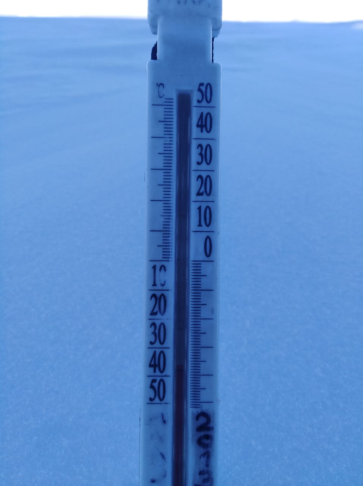

Птицы Антарктиды

Описание климата Антарктиды
Средняя температура зимой от −60 до −70 °C, а летом от −25° до −45 °C. Самым тёплым днём на внутриконтинентальной станции Восток за всё время её существования (а эта станция действует с 16 декабря 1957 года) был день 16 декабря 1957 года, когда столбик спирта в термометре поднялся до −13,6°С.